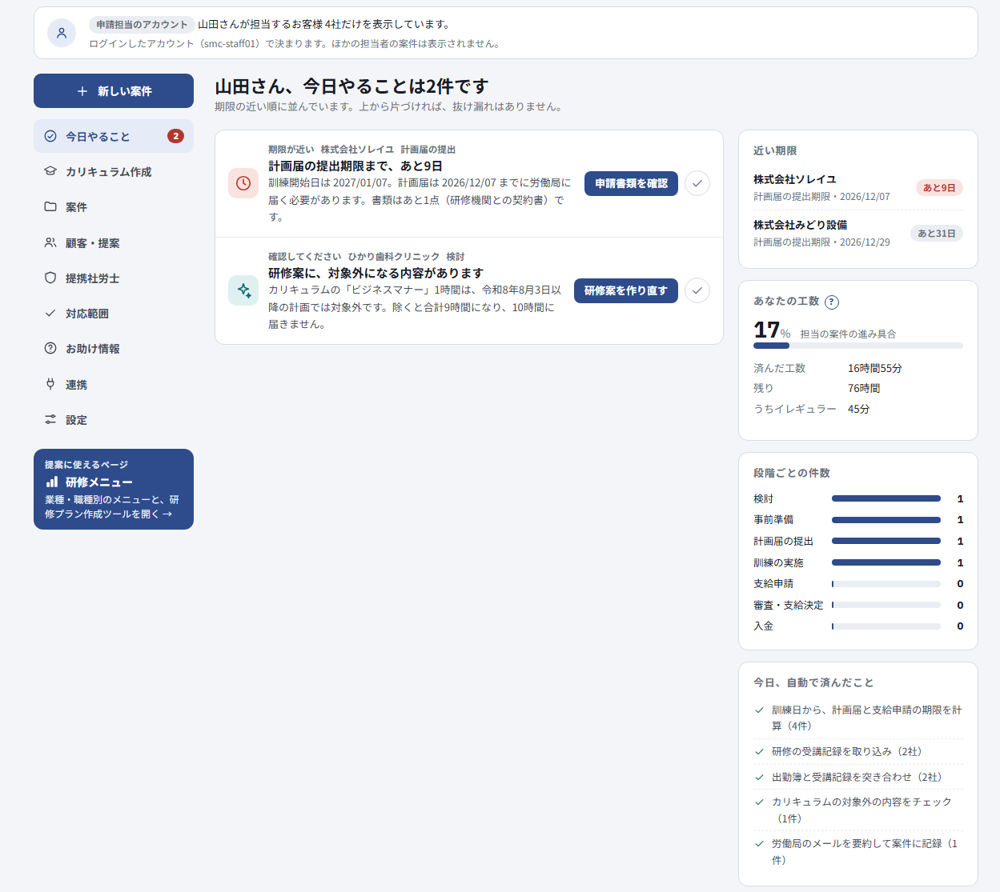
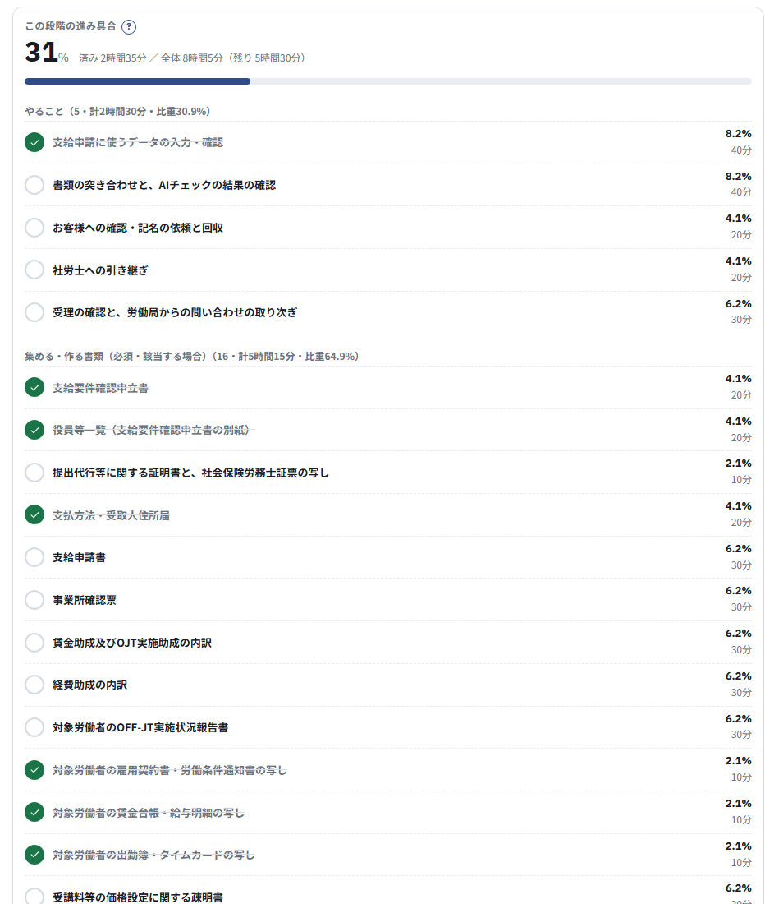
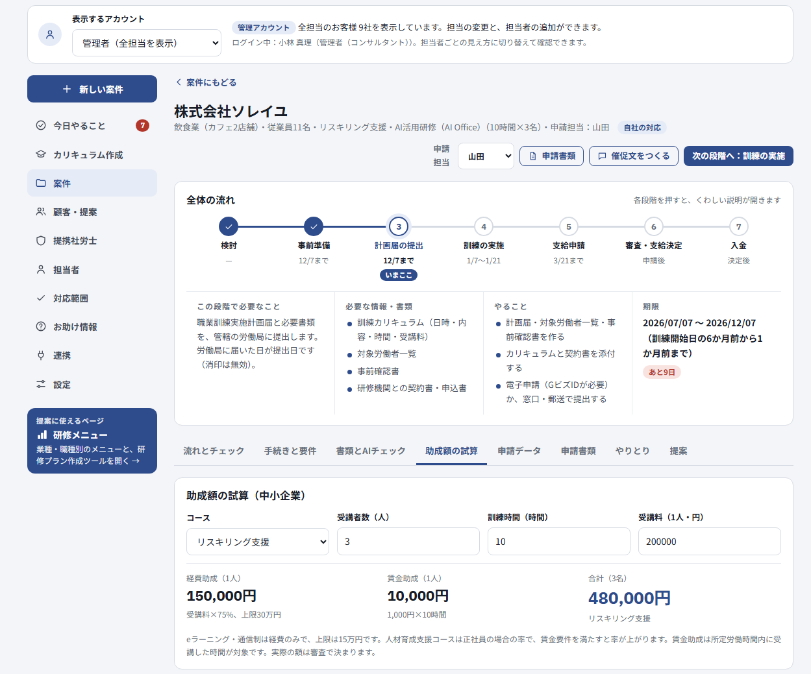
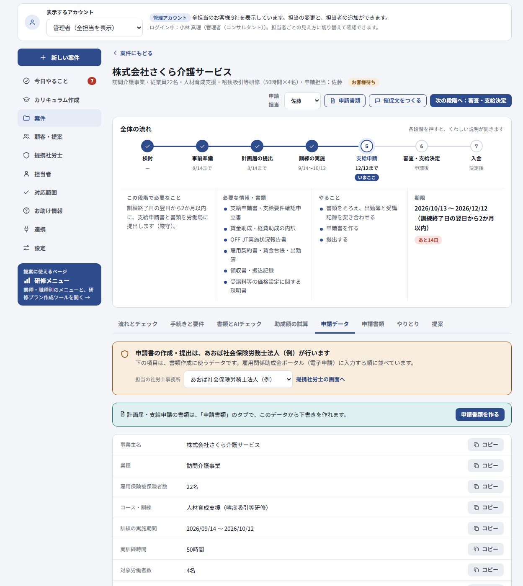
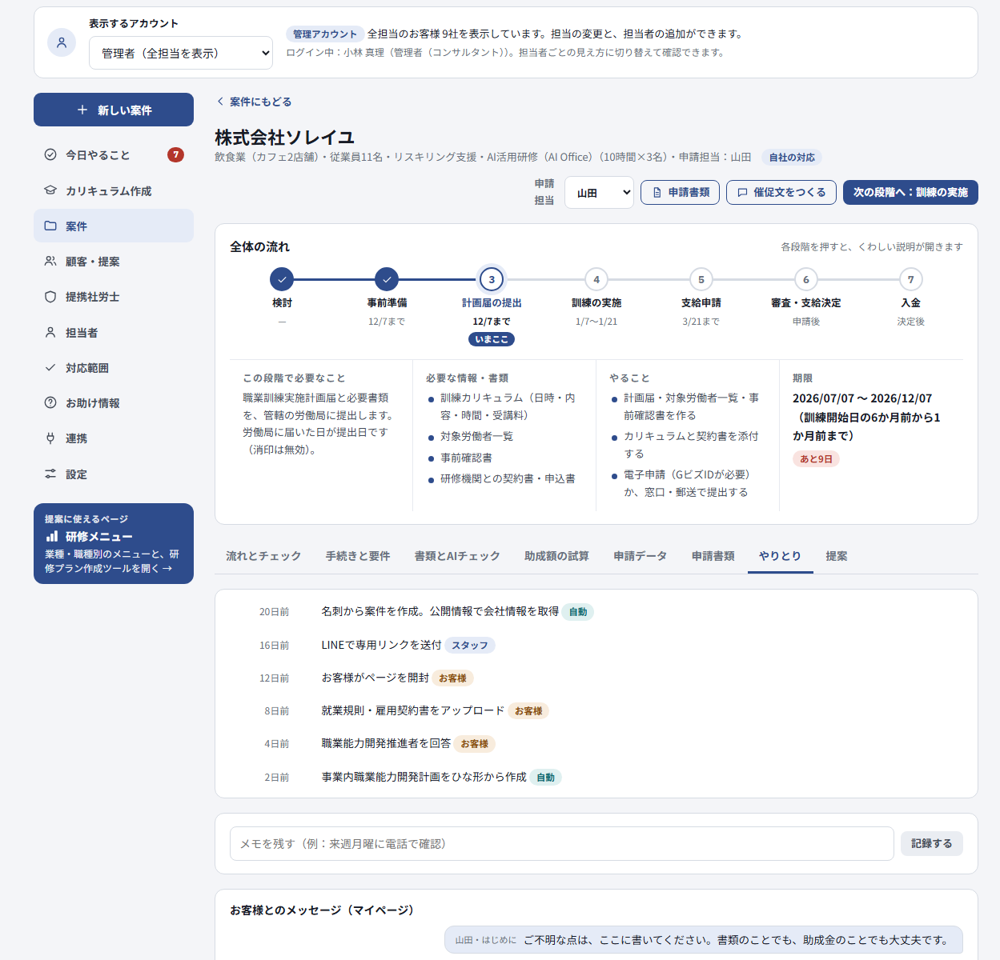
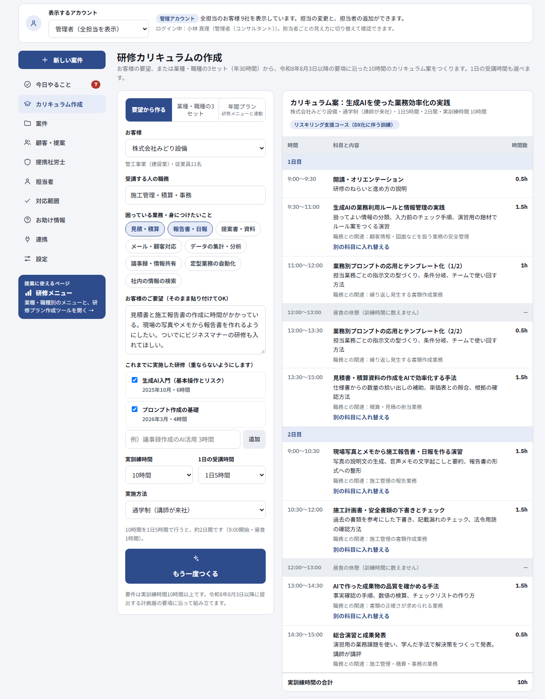
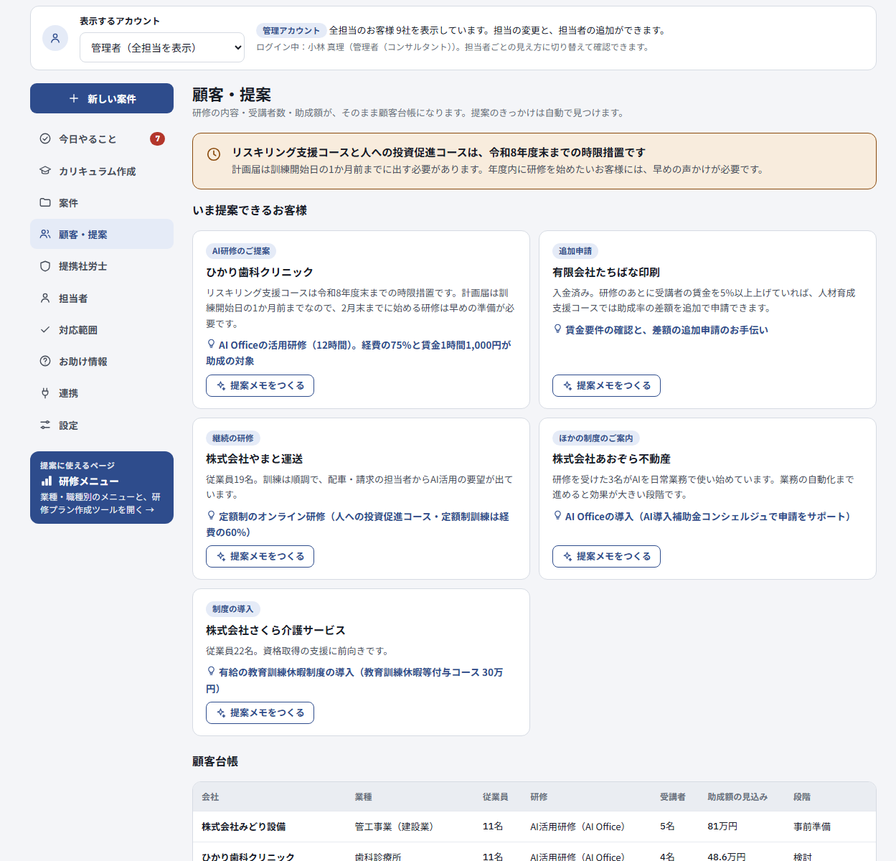
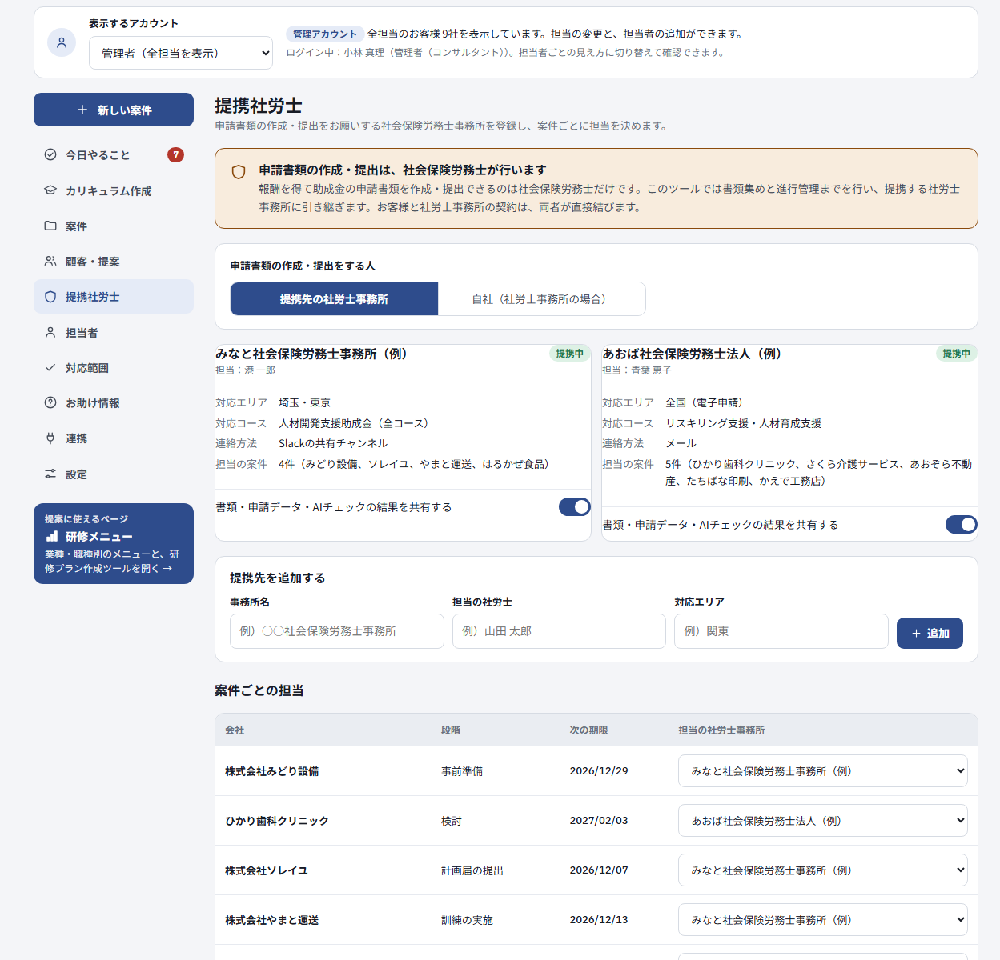
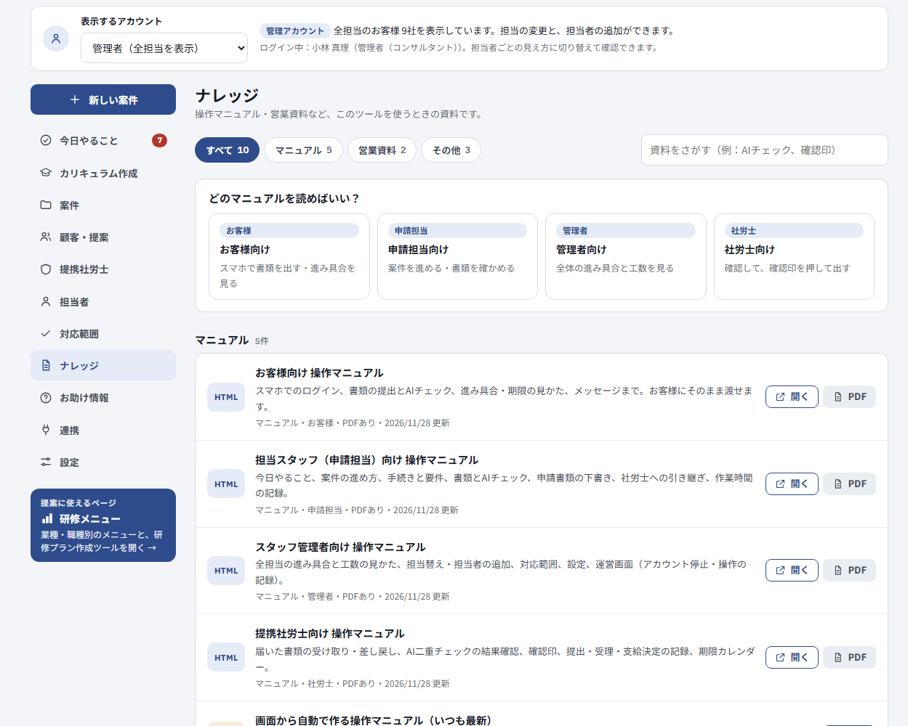
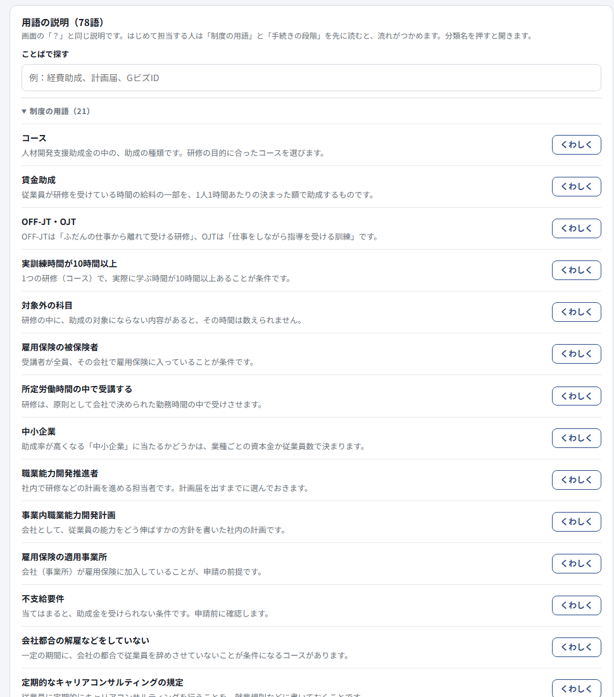

人材開発支援助成金コンシェルジュ操作マニュアル
お客様から書類を集めて、期限どおりに社労士へ引き継ぐまで。
毎日の操作を、画面の写真と番号つきで案内します。
知りたいことから、開けます
このツールは、書類集めと進行管理の道具です
書類を集める
お客様がスマホで撮ってアップ。足りない書類は自動で一覧になります。
期限を守る
訓練の日付から、計画届と支給申請の期限を自動で計算します。
AIが二重チェック
2つのAIが別々に読み、判定が分かれたら人が確かめます。
社労士へ引き継ぐ
そろった書類とデータを、提携の社労士に渡します。
申請は7つの段階で進み、期限は2回あります
自分のIDでログインすると、担当のお客様だけが見えます
- 1ログインID自分のIDを入れます（例：smc-staff01）。
- 2パスワードパスワードは本人だけが決め、運営も見られません。試作のデモはすべて demo です。
- 3ログイン押すと「今日やること」が開きます。
- 4二段階認証オンにすると、ログインのたびにSMSの確認コードが届きます。必ずオンにしてください。
- 5この人でログイン試作だけにある、デモ用のボタンです。
| デモのID | 名前 | 担当 |
|---|---|---|
| smc-staff01 | 山田（申請担当） | 4社 |
| smc-staff02 | 佐藤（申請担当） | 3社 |
| smc-staff03 | 中村（申請担当） | 2社 |
 12345
12345毎日は、この3ステップだけ
「今日やること」を開く
- 期限の近い順に並んだ用事を、上から確認
- 右側の「近い期限」で、14日以内の案件を確認
- 「あなたの工数」で、残りの作業量をつかむ
案件を開いて進める
- 「書類とAIチェック」で、届いた書類を確認済みに
- 足りない書類は「催促文をつくる」でLINEに
- そろったら「申請書類」で社労士に引き継ぐ
済みにして、記録する
- 終わった用事は ✓ で「済み」にする
- 電話・日程調整などは「作業時間の記録」に残す
- お客様との話は「やりとり」にメモ
朝はここから。上から順に片づけます
- 1見えている範囲ログインしたアカウントで決まります。ほかの担当の案件は出ません。
- 2今日の用事期限の近い順です。会社名・段階・理由が1行目に出ます。
- 3作業のボタン押すと、その作業をする画面がそのまま開きます。
- 4済みにする終わったら ✓ を押します。一覧から消えます。
- 5近い期限14日以内は赤い「あと◯日」になります。
- 6あなたの工数担当の案件の進み具合と、済んだ工数・残り・うちイレギュラーです。

123456案件は、段階ごとのボードで見渡します
- 1数字のカード押すと「お客様待ち」「期限まで14日以内」などで絞り込めます。
- 2会社名でさがす名前の一部だけでも出ます。
- 3ボード／一覧一覧にすると、進み具合・不足・次の期限を表で比べられます。
- 4誰の番お客様待ち 自社の対応 など、次に動く人です。
- 5進み具合いまの段階までの作業の積み上げ（08章）。
- 6期限と不足赤い文字は足りない書類、色の札は期限まであと何日かです。
 123456
123456上で「いまどこか」、下のタブで作業します
- 1よく使うボタン申請書類・催促文をつくる・次の段階へ。
- 2全体の流れ7つの段階と「いまここ」。押すと説明が開きます。
- 3この段階の期限必要な書類・やること・期限と残り日数。
- 4タブ左から順に使うと、迷いません。
| タブ | すること |
|---|---|
| 流れとチェック | 段階ごとの済み・未 |
| 手続きと要件 | 条件・書類の区分・期限（07章） |
| 書類とAIチェック | 届いた書類の確認（09章） |
| 助成額の試算・申請データ | 見込み額と入力データ（10章） |
| 申請書類 | 提出前チェックと引き継ぎ（11章） |
| やりとり・提案 | 記録・メモ・次の提案（12・14章） |
 1234
1234条件を選ぶと、出す書類が自動で決まります
- 1いまの条件この案件の条件のまとめです。「条件を変える」で下の画面が開きます。
- 2訓練（制度）の種類と実施の形コースと研修の種類・通学制かeラーニングか、などを選びます。
- 3提出する人社労士（提出代行・事務代理）か、事業主本人かを選びます。
- 4条件スイッチ当てはまるものだけオンにします。すべての段階の書類と期限、社労士の画面に反映されます。
- 5？分からない言葉は押すと、意味とオンにする目安が出ます（次のページ）。
 12345
12345迷ったら「？」。期限は種類ごとに自動計算
 123
123- 1大事なポイント赤い太字は、間違えると助成されなくなる点です。
- 2例金額や日数の具体例で、意味をつかめます。
- 3この条件で変わる書類いまの案件で、どの書類が必須・該当・不要になるかです。
| 手続き | 期限（自動で計算） |
|---|---|
| 計画届 | 訓練開始日の6か月前から1か月前まで |
| 支給申請 | 訓練終了日の翌日から2か月以内 |
| 変更届：受講者を追加 | 訓練開始日の前日まで |
| 変更届：日時・場所・方法 | 元の日と新しい日の、早いほうの前日まで |
| 変更届：開始日を後ろに | 元の開始日の前日まで（1か月以上ずらすなら計画届を出し直し） |
| 変更届：やむを得ない理由 | 変更後の訓練日の翌日から7日以内 |
進み具合は、済んだ作業の量で決まります
- 1この段階の進み具合済んだ時間と、段階全体の時間・残りです。
- 2やること段階ごとの作業に、想定の分数が決まっています。
- 3済みにする丸を押すと済みになります。書類は下書きができたときや、社労士が確認したときに自動で済みになります。
- 4比重この項目が済むと上がる％と、想定の分数です。
- 5集める・作る書類必須と該当する場合の書類だけを数えます。任意は数えません。

12345予定外の作業は、作業時間の記録に残します
 12345
12345- 1案件全体の進み具合各段階の比重を合わせた％と、いまの段階です。
- 2工数想定工数の合計＝標準＋イレギュラー。済んだ分と残りも出ます。
- 3段階ごとの表済み／想定の時間と、案件全体の中での比重です。
- 4作業時間の記録電話での日程調整や、労働局からの問い合わせなどです。
- 5記録する内容・時間（分）・段階を入れて押します。あなたの工数に集計されます。
1社の標準の工数（例：約23〜25時間）。書類の数・訓練の月数・条件で変わります。
変更届1件ごとに、イレギュラーとして自動で加わる時間です。
2つのAIが読み、分かれたら人が決めます
- 1まとめてAIでチェック届いた書類を一度にチェックします。
- 2AIが読み取った内容読み違いはここで直し、もう一度チェックします。
- 3判定が分かれたAI-1とAI-2の結果が違う書類です。内容を見て決めます。
- 4AI-1・AI-2の結果OK 一致 は問題なし、要確認 は直し方が出ます。
 12344
12344助成額の見込みと、電子申請の入力データ
助成額の試算タブ

12- 1コース・人数・時間・受講料入れると、すぐに計算し直します。
- 2合計の見込み経費助成と賃金助成の合計です。実際の額は審査で決まります。
申請データタブ

345- 3担当の社労士事務所この案件の書類を作り、提出する事務所です。
- 4入力する順のデータ雇用関係助成金ポータル（電子申請）に入れる順に並んでいます。
- 5コピー1項目ずつコピーして、社労士に渡せます。
そろったら、提出前チェックを通して社労士へ
- 1作るのは社労士提携の社労士が書類を作り、出します。あなたは材料をそろえます。
- 2計画届／支給申請どちらの書類かを切り替えます。
- 34つのステップデータ → 書類の突き合わせ → 自動チェック → 社労士に引き継ぐ。
- 4データの出どころ名刺・公開情報・書類・ご回答など。直すと全書類に反映します。
- 5下書きのプレビュー社労士の下書きは、ここで読むだけで表示・印刷できます。
 5
5 1234
1234催促はLINE用の文をコピー。やりとりは記録に
 123
123- 1足りないものだけその案件の不足だけが並び、期限も自動で文に入ります。
- 2お客様専用のリンクスマホで撮ってアップするだけのページが開きます。
- 3コピーするあなたのLINEに貼って送ります。ツールが勝手に送ることはありません。

456- 4記録の一覧スタッフ お客様 自動 の誰がしたことかが分かります。
- 5メモを残す電話の内容などを書いて「記録する」。担当が替わっても引き継げます。
- 6お客様とのメッセージマイページに書かれた質問に、ここから返事をします。
お客様の要望から、10時間の研修案を作ります
- 13つの作り方要望から作る／業種・職種の3セット／年間プラン（研修メニューと連動）。
- 2困っている業務・要望チップを選ぶか、お客様の言葉をそのまま貼り付けます。
- 3これまでの研修チェックした研修と重ならない科目を選びます。
- 4カリキュラム案実訓練10時間を、1日の受講時間（2〜8時間）に合わせて時間割にします。
- 5職務との関連助成の対象になる理由です。
- 6別の科目に入れ替える押すと、条件に合う別の科目に替わります。

123456次の提案のきっかけと、提携社労士の担当
顧客・提案メニュー

12- 1時限措置のお知らせリスキリング支援・人への投資促進は令和8年度末まで。早めの声かけを。
- 2提案メモをつくる研修の実績から、次に提案できる内容のメモを作ります。
提携社労士メニュー

34- 3作成・提出をする人ふだんは「提携先の社労士事務所」です。
- 4共有のスイッチ書類・申請データ・AIチェックの結果を、その事務所と共有します。
マニュアルや資料は、ナレッジにまとまっています

12345- 1左のメニュー「ナレッジ」操作マニュアル・よく使うリンクが一か所にあります。
- 2分類でしぼり込むすべて／マニュアル／その他。数字は件数です。
- 3ことばで探す「AIチェック」「確認印」などで、資料の名前と説明から探せます。
- 4どのマニュアルを読めばいい？お客様・申請担当・管理者・社労士の役割ごとに案内します。
- 5開く・PDF「開く」でブラウザ表示、「PDF」で保存。お客様にはお客様向けを渡します。
預からない・作らない。分からない言葉は調べられます
ツールの外で行うこと
| GビズIDの取得とポータルへのログイン | お客様 |
| ポータルでの代理先（社労士）の設定・電子申請の送信 | お客様・社労士 |
| 原本が要る書類の郵送・窓口への提出 | 社労士 |
| 労働局からの問い合わせへの回答 | 社労士（記録だけツールに残す） |

123- 1ことばで探す左のメニュー「お助け情報」の「用語の説明」です。
- 2くわしく画面の「？」と同じ説明が開きます。
- 3分類はじめての人は「制度の用語」と「手続きの段階」から読むと流れがつかめます。
よくある質問
申請担当のアカウントでは、自分が担当するお客様だけが出ます。担当の割り当ては、管理者が「担当者」の画面で行います。
「書類とAIチェック」で両方の結果と読み取った内容を見て、「確認済みにする」か「お客様に差し替えを依頼」を押します。
自動で次の開庁日にずれます。祝日は暦で計算しているので、表示の日付が開庁日かを念のため確かめてください。
「手続きと要件」で変更届の期限を計算し、社労士に伝えます。変更届を出さずに変えた部分は、助成の対象外です。
「催促文をつくる」でリンクを送り直します。スマホで撮った写真でも、PDFでも受け付けます。
「今日やること」の「研修案を作り直す」から、カリキュラム作成で別の科目に入れ替えます。
提携の社労士に引き継ぐ案件では、運営側は下書きを作りません（27条）。下書きは社労士の画面で作られ、ここでは読むだけです。
「手続きと要件」で、済んだ項目の丸を押したか確かめます。任意の書類は数えません。